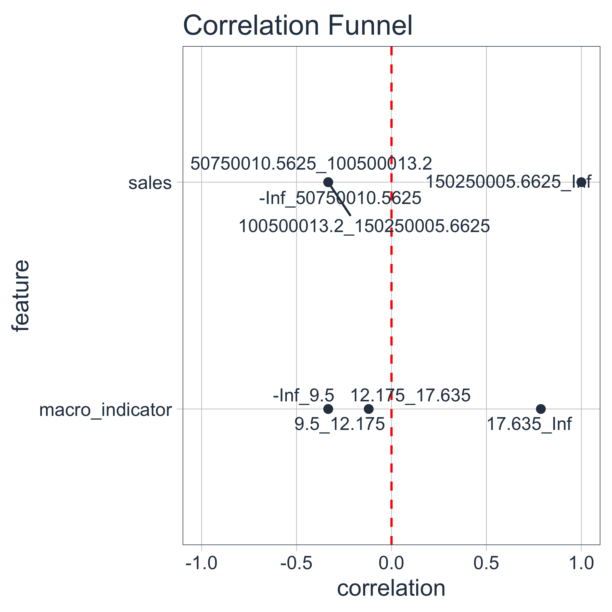
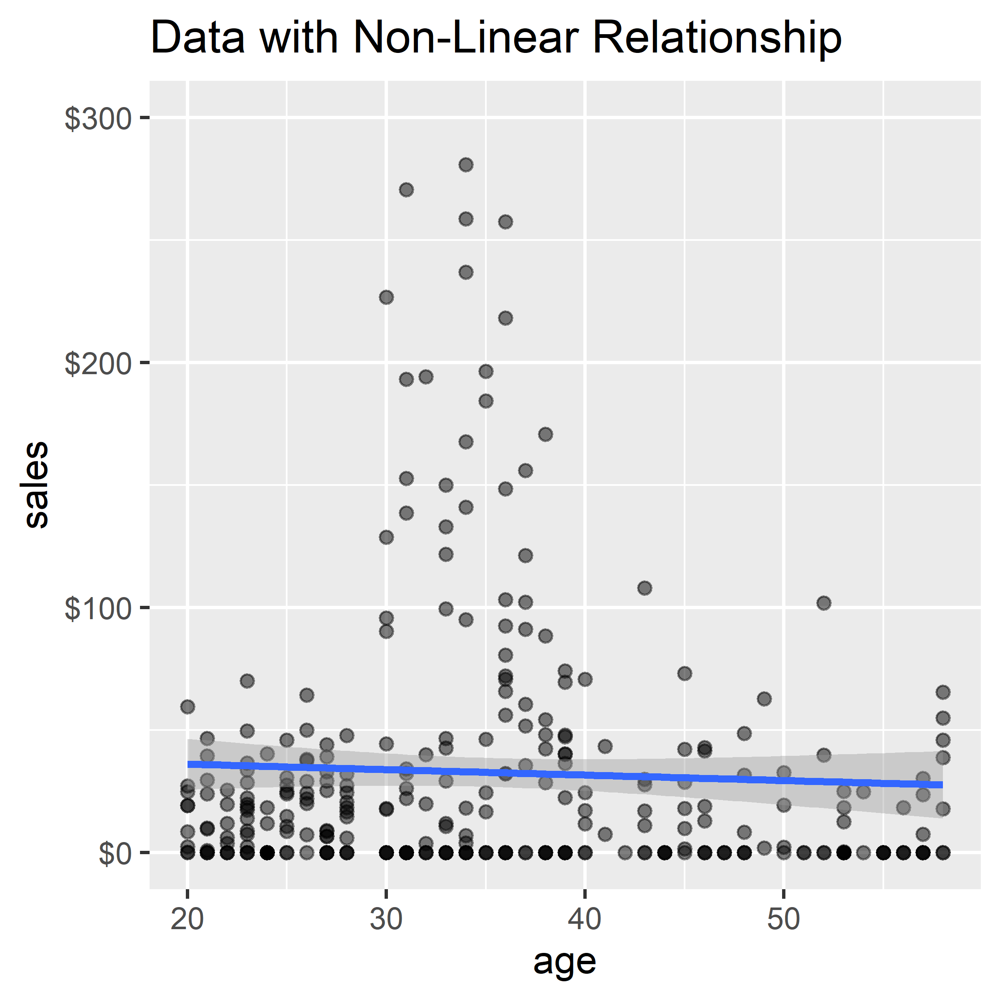
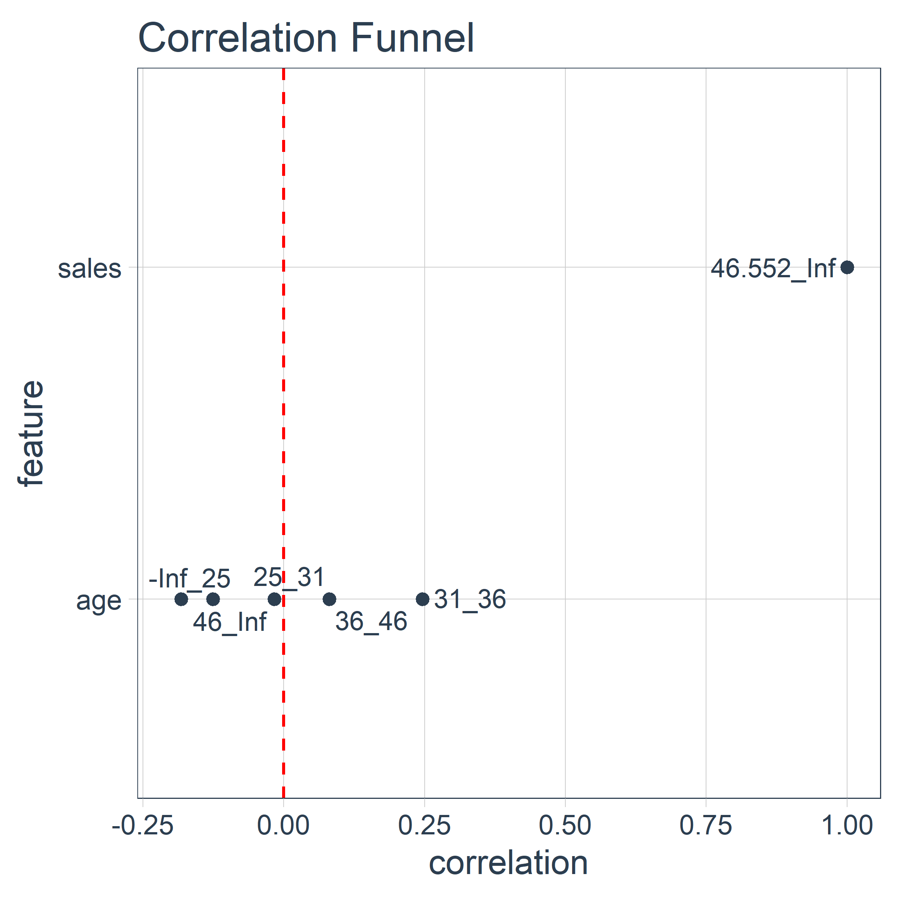
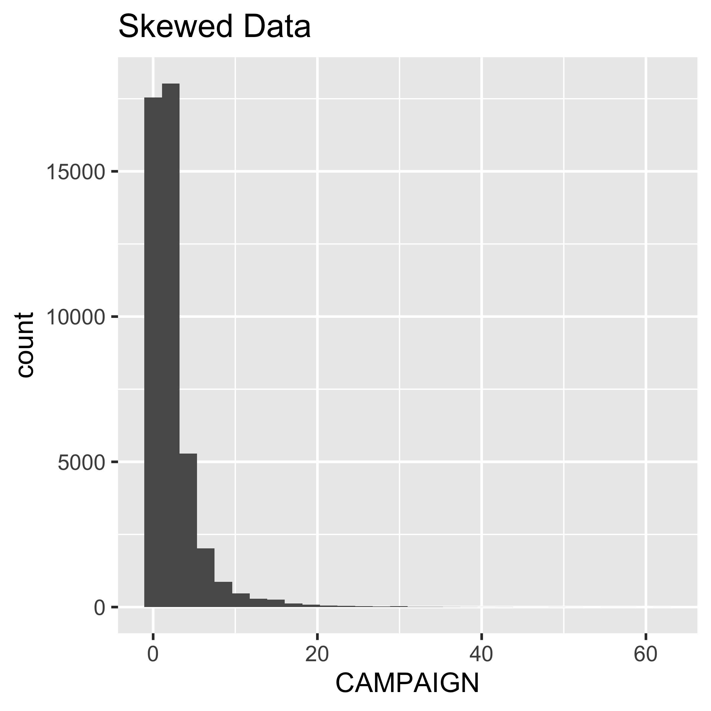
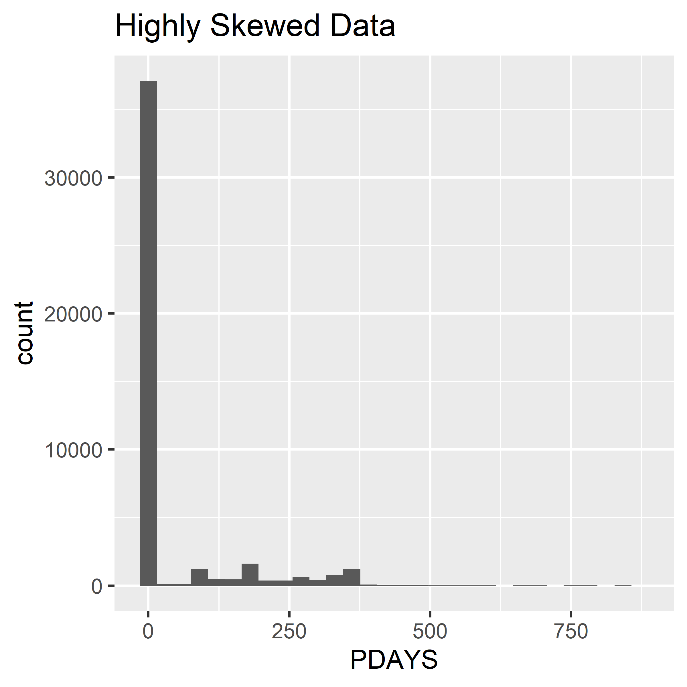
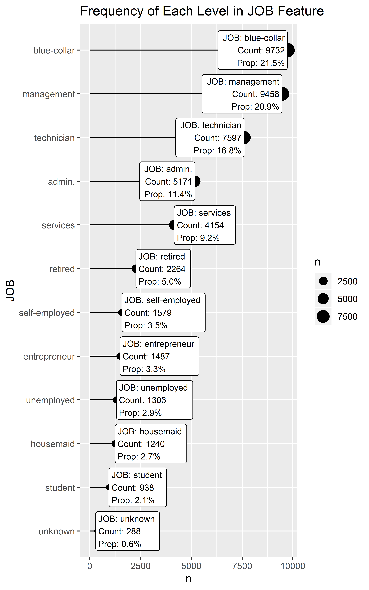
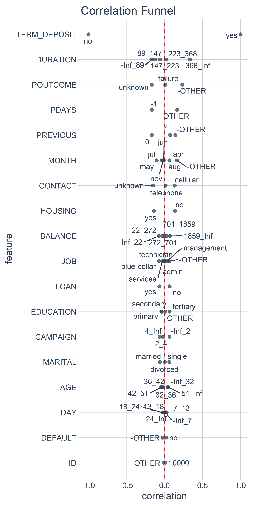

The purpose of the Key Considerations and FAQs is to address questions that users have and to highlight key considerations before or after various steps in correlationfunnel process.
Libraries used.
library(correlationfunnel)
library(dplyr)
library(tibble)
library(ggplot2)
library(stringr)
library(forcats)We recommend using the following best practices to get high performance with correlationfunnel:
Clean the Data - Make sure categorical data and numeric data are cleaned to take care of any errors and missing values.
Perform Feature Engineering - Make sure useful information any text fields (e.g. description fields). Make sure date fields are converted to categorical data like day of the week. Use
Discard Features Known to Have No Predictive Value - Example ID fields
Discard ALL Non-Numeric and Non-Categorial Data - Remove date or datetime features, generic discription fields.
Garbage In, Garbage Out - Using the correlationfunnel package on data that has little relationship will not yield good results. If you are not getting good results by following the afformentioned “Key Considerations”, then your data may have little relationship. This is useful and a sign that you may need to collect better data.
Something Bad Happened or You Think Something Good Should Have Happened - File an error on GitHub if you have a question and you believe that correlationfunnel should be reporting something differently and/or has an error.
The approach to numeric data is to bin. This works well when non-linear relationships are present at the expense of a slight loss in linear relationship identification. We’ll see examples using synthetic data to illustrate this point.
Let’s make some sample data for Sales versus a highly correlated Macroeconomic Predictor.
# Generate Data
set.seed(1)
linear_data <- tibble(
sales = rnorm(100, mean = 10, sd = 5) + seq(1, 200,length.out = 100) * 1e6,
macro_indicator = rnorm(100, mean = 1, sd = 2) + seq(5, 20, length.out = 100)
) %>%
mutate_all(~round(., 2))
# Plot Relationship
linear_data %>%
ggplot(aes(macro_indicator, sales)) +
geom_point(alpha = 0.5) +
geom_smooth(method = "lm") +
scale_y_continuous(labels = scales::dollar_format(scale = 1e-6, suffix = "M")) +
labs(title = "Data with Linear Relationship")We can see that the correlation between the two features is approximately 0.9.
linear_data %>%
correlate(target = sales)
#> # A tibble: 2 x 3
#> feature bin correlation
#> <fct> <chr> <dbl>
#> 1 sales <NA> 1
#> 2 macro_indicator <NA> 0.918What happens when we binarize()? What we want to know is which segment of the Macroeconomic Indicator is most correlated with the highest sales bin.
linear_data_corr_tbl <- linear_data %>%
binarize() %>%
correlate(sales__150250005.6625_Inf)
linear_data_corr_tbl
#> # A tibble: 8 x 3
#> feature bin correlation
#> <fct> <chr> <dbl>
#> 1 sales 150250005.6625_Inf 1
#> 2 macro_indicator 17.635_Inf 0.787
#> 3 sales -Inf_50750010.5625 -0.333
#> 4 sales 50750010.5625_100500013.2 -0.333
#> 5 sales 100500013.2_150250005.6625 -0.333
#> 6 macro_indicator -Inf_9.5 -0.333
#> 7 macro_indicator 9.5_12.175 -0.333
#> 8 macro_indicator 12.175_17.635 -0.12We can see that the best relationship between the highest sales bin is the highest macroeconomic indicator bin. The magnitude of the correlation is lower, but it’s still relatively high at approximately 0.8.
When we visualize with plot_correlation_funnel(), the macroeconomic predictor trend shows up indicating the highest macroeconomic indicator bin is highly correlated with the highest sales bin.

The real beauty of the binning process is when nonlinear trends are present. Let’s again make some synthetic data this time between sales and age of customer.
# Generate synthetic data
set.seed(1)
nonlinear_data <- tibble(
sales = c(
rnorm(100, mean = 10, sd = 25),
rnorm(100, mean = 50, sd = 100),
rnorm(100, mean = 2, sd = 40)),
age = c(
runif(100, min = 20, max = 29),
runif(100, min = 30, max = 39),
runif(100, min = 39, max = 59)
)
) %>%
mutate(
sales = ifelse(sales < 0, 0, sales) %>% round(2),
age = floor(age)
)
# Visualize the nonlinear relationship
nonlinear_data %>%
ggplot(aes(age, sales)) +
geom_point(alpha = 0.5) +
geom_smooth(method = "lm") +
scale_y_continuous(labels = scales::dollar_format()) +
expand_limits(y = 300) +
labs(title = "Data with Non-Linear Relationship")
We can see that the age range between 30 and 37 has much larger sales than the other age ranges. However, a linear trendline is flat indicating essentially no linear relationship.
The correlation analysis on un-binned data similarly expresses the magnitude of the relationship at approximately 0.
nonlinear_data %>%
correlate(sales)
#> # A tibble: 2 x 3
#> feature bin correlation
#> <fct> <chr> <dbl>
#> 1 sales <NA> 1.000
#> 2 age <NA> -0.0459However, when we bin the data, the relationship is exposed. The bin age 31-36 has a 0.25 correlation, which is quite high for real data. This indicates predictive power. Below 25 at -0.18 is negatively correlated, and likewise above 46 is negatively correlated. This tells the story that the 30-36 age range is the most likely group to purchase products.
nonlinear_data_corr_tbl <- nonlinear_data %>%
binarize(n_bins = 5) %>%
correlate(sales__46.552_Inf)
nonlinear_data_corr_tbl
#> # A tibble: 9 x 3
#> feature bin correlation
#> <fct> <chr> <dbl>
#> 1 sales 46.552_Inf 1
#> 2 sales -Inf_5.07000000000002 -0.408
#> 3 sales 5.07000000000002_23.936 -0.25
#> 4 sales 23.936_46.552 -0.25
#> 5 age 31_36 0.246
#> 6 age -Inf_25 -0.182
#> 7 age 46_Inf -0.126
#> 8 age 36_46 0.0809
#> 9 age 25_31 -0.0168We can confirm the relationship visually using plot_correlation_funnel().

Highly skewed numeric data is tricky because the binning strategy does not conform well to the traditional quantile() approach for cutting data into bins. One bin tends to dominate.
To get around this issue, the binarize() function attempts to cut using the n_bins value provided by you.
When data becomes highly skewed, meaning one numeric value dominates so much that virtually all values are this value, the cuts are iteratively reduced until only 2 bins are left.
At that point the algorithm converts the values to factors, and anything that is not in the majority class gets a class of “OTHER” (or the value you provide as name_infreq).
We’ll show this process using skewed features in the marketing_campaign_tbl data that ships with correlationfunnel.
data("marketing_campaign_tbl")
marketing_campaign_tbl
#> # A tibble: 45,211 x 18
#> ID AGE JOB MARITAL EDUCATION DEFAULT BALANCE HOUSING LOAN
#> <chr> <dbl> <chr> <chr> <chr> <chr> <dbl> <chr> <chr>
#> 1 2836 58 mana… married tertiary no 2143 yes no
#> 2 2837 44 tech… single secondary no 29 yes no
#> 3 2838 33 entr… married secondary no 2 yes yes
#> 4 2839 47 blue… married unknown no 1506 yes no
#> 5 2840 33 unkn… single unknown no 1 no no
#> 6 2841 35 mana… married tertiary no 231 yes no
#> 7 2842 28 mana… single tertiary no 447 yes yes
#> 8 2843 42 entr… divorc… tertiary yes 2 yes no
#> 9 2844 58 reti… married primary no 121 yes no
#> 10 2845 43 tech… single secondary no 593 yes no
#> # … with 45,201 more rows, and 9 more variables: CONTACT <chr>, DAY <dbl>,
#> # MONTH <chr>, DURATION <dbl>, CAMPAIGN <dbl>, PDAYS <dbl>,
#> # PREVIOUS <dbl>, POUTCOME <chr>, TERM_DEPOSIT <chr>The “CAMPAIGN” feature is skewed. It cannot be binned with 4 bins because the quantile has only 4 unique values (enough for 3 bins: 1-2, 2-3, 3-63).
We can see the skew visually.

We can see that binarize() recognizes this and bins accordingly.
At some point, binning becomes impossible because only 2 values exist. Rather than drop the feature, binarize() converts it to a factor() and the one-hot encoding process takes over using the thresh_infreq argument for converting any low frequency factors to a generic “OTHER” category.
We can see that the “PDAYS” feature is highly skewed with almost all values are -1.
We can see the high skew visually.
marketing_campaign_tbl %>%
ggplot(aes(PDAYS)) +
geom_histogram() +
labs(title = "Highly Skewed Data")
We can see that binarize() converts this feature to categorical data then the categorical threshold takes over. Just specify the proportion of low frequency categories to retain.
We’ve actually already seen this. The binarization processed when performed on numeric data converts the data to bins and then one-hot encodes the result. The bins are categories.
The process for categorical data works the same as for numeric (minus the binning process).
Let’s take a categorical feature from our marketing_campaign_tbl.
marketing_campaign_tbl %>%
select(EDUCATION)
#> # A tibble: 45,211 x 1
#> EDUCATION
#> <chr>
#> 1 tertiary
#> 2 secondary
#> 3 secondary
#> 4 unknown
#> 5 unknown
#> 6 tertiary
#> 7 tertiary
#> 8 tertiary
#> 9 primary
#> 10 secondary
#> # … with 45,201 more rowsThe binarize() function uses One-Hot Encoding by default. The Dummy Encoding Method has a key flaw for Correlation Analysis in that it does not show all of the categorical levels. This affects the Correlation Funnel Plot causing loss of potentially highly correlated bins in the visualization.
One-Hot Encoding is the process of converting a categorical feature into a series of binary features. The default in binarize() is to perform one-hot encoding, which returns the number of columns equal to the number of levels in the category. This creates a series of binary flags to use in the Correlation Analysis.
marketing_campaign_tbl %>%
select(EDUCATION) %>%
binarize(one_hot = TRUE)
#> # A tibble: 45,211 x 4
#> EDUCATION__prima… EDUCATION__second… EDUCATION__tertia… EDUCATION__unkn…
#> <dbl> <dbl> <dbl> <dbl>
#> 1 0 0 1 0
#> 2 0 1 0 0
#> 3 0 1 0 0
#> 4 0 0 0 1
#> 5 0 0 0 1
#> 6 0 0 1 0
#> 7 0 0 1 0
#> 8 0 0 1 0
#> 9 1 0 0 0
#> 10 0 1 0 0
#> # … with 45,201 more rowsAnother popular method in statistical analysis is Dummy Encoding. The only real difference is that the number of columns are equal to the number of levels minus 1. When zeros are present in each of the new columns (secondary, tertiary, unknown) such as in Row 9, the value means not secondary, tertiary, or unknown, which in turn means primary.
marketing_campaign_tbl %>%
select(EDUCATION) %>%
binarize(one_hot = FALSE)
#> # A tibble: 45,211 x 3
#> EDUCATION__secondary EDUCATION__tertiary EDUCATION__unknown
#> <dbl> <dbl> <dbl>
#> 1 0 1 0
#> 2 1 0 0
#> 3 1 0 0
#> 4 0 0 1
#> 5 0 0 1
#> 6 0 1 0
#> 7 0 1 0
#> 8 0 1 0
#> 9 0 0 0
#> 10 1 0 0
#> # … with 45,201 more rowsThe binarize() function uses a parameter thresh_infreq = 0.01 and name_infreq = "OTHER" to keep infrequent categories that add little value to the analysis from unnecessarily increasing dimensionality.
Dimensionality Reduction is important for the correlation analysis. Categorical data can quickly get out of hand causing the width (number of columns) to increase, which is known as High Dimensionality. The One-Hot Encoding process will add a lot of features if not kept in check.
High Dimensionality is a two-fold problem. First, having many features adds to the computation time to analyze data. This is particularly painful on large data sets (5M rows+). Second, adding infrequent features (low occurrance) typically adds little predictive value to the modeling process.
To prevent this High Dimensionality situation, the binarize() function contains a thresh_infreq argument that lumps infrequent categories together based on a threshold of proportion within the rows of the data. For example, a thresh_infreq = 0.01 lumps any factors present in less than 1% of the data into a new category defined by name_infreq = "-OTHER" (you can change this name for the lumped category).
Let’s examine the “JOB” categorical feature from the marketing_campaign_tbl, which has 12 levels, one for the category of Job that the customer falls into. We can se that using binarize() creates 12 new features.
marketing_campaign_tbl %>%
select(JOB) %>%
binarize(thresh_infreq = 0) %>%
glimpse()
#> Observations: 45,211
#> Variables: 12
#> $ JOB__admin. <dbl> 0, 0, 0, 0, 0, 0, 0, 0, 0, 0, 1, 1, 0, 0, 0…
#> $ `JOB__blue-collar` <dbl> 0, 0, 0, 1, 0, 0, 0, 0, 0, 0, 0, 0, 0, 0, 0…
#> $ JOB__entrepreneur <dbl> 0, 0, 1, 0, 0, 0, 0, 1, 0, 0, 0, 0, 0, 0, 0…
#> $ JOB__housemaid <dbl> 0, 0, 0, 0, 0, 0, 0, 0, 0, 0, 0, 0, 0, 0, 0…
#> $ JOB__management <dbl> 1, 0, 0, 0, 0, 1, 1, 0, 0, 0, 0, 0, 0, 0, 0…
#> $ JOB__retired <dbl> 0, 0, 0, 0, 0, 0, 0, 0, 1, 0, 0, 0, 0, 0, 0…
#> $ `JOB__self-employed` <dbl> 0, 0, 0, 0, 0, 0, 0, 0, 0, 0, 0, 0, 0, 0, 0…
#> $ JOB__services <dbl> 0, 0, 0, 0, 0, 0, 0, 0, 0, 0, 0, 0, 0, 0, 1…
#> $ JOB__student <dbl> 0, 0, 0, 0, 0, 0, 0, 0, 0, 0, 0, 0, 0, 0, 0…
#> $ JOB__technician <dbl> 0, 1, 0, 0, 0, 0, 0, 0, 0, 1, 0, 0, 1, 1, 0…
#> $ JOB__unemployed <dbl> 0, 0, 0, 0, 0, 0, 0, 0, 0, 0, 0, 0, 0, 0, 0…
#> $ JOB__unknown <dbl> 0, 0, 0, 0, 1, 0, 0, 0, 0, 0, 0, 0, 0, 0, 0…Examining these features, not all are present frequenly. We can see that several features appear only 5% or less of the time.
marketing_campaign_tbl %>%
# Count Frequency
count(JOB) %>%
mutate(prop = n / sum(n)) %>%
# Format columns for plot
mutate(JOB = as.factor(JOB) %>% fct_reorder(n)) %>%
mutate(label_text = str_glue("JOB: {JOB}
Count: {n}
Prop: {scales::percent(prop)}")) %>%
# Creat viz
ggplot(aes(JOB, n)) +
geom_point(aes(size = n)) +
geom_segment(aes(yend = 0, xend = JOB)) +
geom_label(aes(label = label_text), size = 3, hjust = "inward") +
coord_flip() +
labs(title = "Frequency of Each Level in JOB Feature")
We can reduce the dimensionality of this feature by increasing the grouping to 6% using thresh_infreq = 0.06. Now the features with presence less than 6% are grouped into an “-OTHER” category.
marketing_campaign_tbl %>%
select(JOB) %>%
binarize(thresh_infreq = 0.06, name_infreq = "-OTHER") %>%
glimpse()
#> Observations: 45,211
#> Variables: 6
#> $ JOB__admin. <dbl> 0, 0, 0, 0, 0, 0, 0, 0, 0, 0, 1, 1, 0, 0, 0, …
#> $ `JOB__blue-collar` <dbl> 0, 0, 0, 1, 0, 0, 0, 0, 0, 0, 0, 0, 0, 0, 0, …
#> $ JOB__management <dbl> 1, 0, 0, 0, 0, 1, 1, 0, 0, 0, 0, 0, 0, 0, 0, …
#> $ JOB__services <dbl> 0, 0, 0, 0, 0, 0, 0, 0, 0, 0, 0, 0, 0, 0, 1, …
#> $ JOB__technician <dbl> 0, 1, 0, 0, 0, 0, 0, 0, 0, 1, 0, 0, 1, 1, 0, …
#> $ `JOB__-OTHER` <dbl> 0, 0, 1, 0, 1, 0, 0, 1, 1, 0, 0, 0, 0, 0, 0, …Once the data has been One-Hot Encoded, Correlation Analysis proceeds as normal.
marketing_campaign_tbl %>%
binarize(n_bins = 5, thresh_infreq = 0.06, name_infreq = "-OTHER") %>%
correlate(TERM_DEPOSIT__yes) %>%
plot_correlation_funnel(alpha = 0.7)